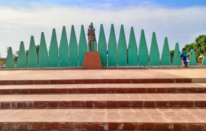
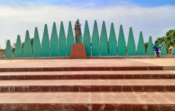

La place de la nation
 
La place de la Nation est une réalisation du 11 décembre 2020. Aménagée sur l’espace citoyen à l’hôtel de ville de Banfora, la place de la Nation est un site de 300 places assises, un cafétéria, des toilettes et une haute stèle symbolisant un Paysan noir, le second nom de la ville de Banfora d'ou "La cité du paysant noir".

La place de la Nation est une réalisation du 11 décembre 2020. Aménagée sur l’espace citoyen à l’hôtel de ville de Banfora, la place de la Nation est un site de 300 places assises, un cafétéria, des toilettes et une haute stèle symbolisant un Paysan noir, le second nom de la ville de Banfora d'ou "La cité du paysant noir".